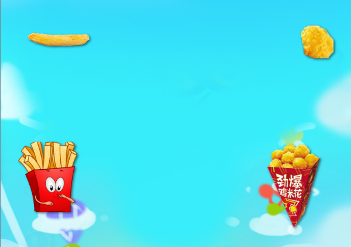

薯条大战鸡米花¶
项目重点¶
- Swing函数，将移动功能抽象出来
- 碰撞坐标的利用
游戏素材¶
背景、薯条盒、鸡米花桶、薯条、鸡米花
lib版本¶
版本要求v1.0以上，特别重要
<script src="https://rss.leaplearner.com/teachfiles/Text/leap.min.v1.0.js"></script>
图片¶
所有的素材都可以自定义，我们在这里，定义了一下变量
- bg：背景图
- chips：薯条，同时用chip来表示单个薯条，即薯条们的攻击武器
- popcorns：原意爆米花，因为找不到鸡米花的英文，我们就用这个吧。同样popcorn代表单个爆米花。
- boom：代表爆炸的效果图
在编程中，我们经常使用复数名词和单数名词来代表多个和单个道具。
canvas.resize(600, 800);
var url = "https://llcs-1252287760.cossh.myqcloud.com/images/";
var bg = new Sprite("https://rss.leaplearner.com/Image/Bgs/bg_shouye.jpg", 0, 0, canvas.width, canvas.height);
var chips = new Sprite(url + "FrenchFries.png", 20, 320, 120, 120);
var chip = new Sprite(url + "Popcorn.png", 450, 320, 100, 150);
var popcorns = new Sprite(url + "FrenchFry.png", 40, 130, 120, 30);
var popcorn = new Sprite(url + "PopcornBullet.png", 510, 120, 60, 60);
var boom = new Sprite("https://llcs-1252287760.cossh.myqcloud.com/images/Boom2.png", 0, 0, 150, 150);
function draw() {
canvas.clear();
bg.draw();
// canvas.showAxis();
chips.draw();
popcorns.draw();
chip.draw();
popcorn.draw();
}
setInterval(draw, 20)
到这一步，我们就顺利的将所有角色都显示出来了。

参考代码：https://code.leaplearner.com/share/61933/1
动起来¶
接下来，要让薯条桶（chips）上下动起来，用if、speed加上边界值判断即可。但是，今天我们要做非常多的移动判断：
- chips上下移动
- popcorns上下移动
- chip向右移动
- popcorn向右移动
那么会有非常多的if、speed判断。而这几个逻辑是非常相似的，如果有一个方法，能够一直自动的处理图片的位置，那么就无需我们一直去更新图片的位置了。
Swing¶
Swing就是这么一个类，它的实例如下：
var n = new Swing(0, 100, 10); // low, upper, time
Swing的意思是摇摆，第一、二个参数代表最大和最小值，n的数值在0和100之间摇摆，最后一个参数10代表变化的时间。结果就是，n在10秒的时间从0变到了100，然后又从100变到0。变化过程是均匀的。
实现原理：
依据狭义相对论原理，一个物体确定初始值和变化过程后，即可确定后续任一时刻的位置。
上下移动¶
我们只要把chips的y值设定为一个swing数值，就可以达到让chips上下移动的效果了。
chips.y = new Swing(200, 600, 5);
主意，这个赋值过程是一次性的，也就是说，千万不要定义在循环函数内，否则y会一直初始化，那么也就不会有变化的效果了。
注意观察这一行代码的位置。
https://code.leaplearner.com/share/61933/2
那么，同样很简单就可以吧popcorn的移动动画制作出来了。
发射薯条¶
发射薯条是一个事件驱动的过程，我们简单的用a键来控制
Key['a'].press = function(){
// fire the chip
}
每次发射，重置chip的位置为chips的位置
Key['a'].press = function(){
// fire the chip
chip.x = chips.x;
chip.y = chips.y + 50; // 需要稍微修正
}
注意哦，这里的y必须要进行运算，否则chip的y还是一个变化的值。（chips的y处于薛定谔态，一旦被观测，这个值就确定下来了）。
接下来，就是更新chip的位置了，我们可以继续在update函数中不停的去修改薯条的位置，如：
function draw() {
// 省略其他代码
update();
}
function update(){
chip.x += 10;
}
生命值¶
既然是PK，那么就有胜负的设定。我们预先设定薯片盒和鸡米花盒的总生命值为100，（任意你喜欢的数字啦），我们建议，将这个属性绑定在对象上。
chips.hp = 100;
popcorn.hp = 100;
然后，把生命值显示出来。
function draw(){
// 省略其他代码
text(chips.hp, 33, 33, 50);
text(popcorns.hp, 463, 33, 50);
}
https://code.leaplearner.com/share/61933/3
击中鸡米花¶
判断是否击中鸡米花，如果击中，就扣除鸡米花的生命值。
function update(){
chip.x += 10;
popcorn.x -= 10;
if(chip.collide(popcorns)){
popcorns.hp --;
}
}
击中效果¶
游戏效果要出众，90%靠特效。我们需要特效来展示击中效果。collide方法实际返回了一个碰撞点的坐标，我们可以利用这个坐标来展示击中效果。
function update(){
chip.x += 10;
popcorn.x -= 10;
p = chip.collide(popcorns);
if(p){
popcorns.hp --;
boom.x = p.x - boom.w/2; // 位置修正
boom.y = p.y - boom.h/2; // 位置修正
boom.draw();
}
}
https://code.leaplearner.com/share/61933/4
生命值特效¶
同样，我们可以给生命值添加一个特效。一般我们喜欢用绿色代表安全，红色代表危险。将颜色以数字的变化形式体现出来，我们需要用到HSL颜色表达式。
HSL(h, s, l)
- h，从0到360，代表360个颜色，比如0代表红色，100代表绿色，从0到100，就是从红色到绿色的过程
- s，透明度，一般用1
- l，饱和度，一般用0.5
因为我们的血量正好是100，所以直接可以使用以下式子来代表hp的颜色。
HSL(popcorns.hp, 1, 0.5)
如果是其他数值，那么换算以下即可。比如最大生命值为200，那么颜色表达式就是：
HSL(popcorns.hp/200*100, 1, 0.5)
应用到颜色中，就是
text(chips.hp, 33, 33, 50, HSL(chips.hp, 1, 0.5));
text(popcorns.hp, 463, 33, 50, HSL(popcorns.hp, 1, 0.5));
https://code.leaplearner.com/share/61933/5
其他效果可以按照以上说明慢慢补充
最终效果举例：¶
https://code.leaplearner.com/share/15495/1